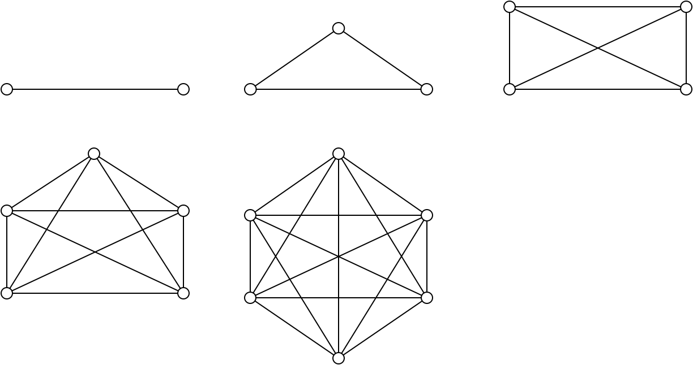

Schaling en schaalbaarheid¶
Alice en Bob willen niet alleen met elkaar, maar ook met anderen communiceren. Als ze voor elke communicatie een aparte directe verbinding (“kanaal”) gebruiken, loopt dit al snel uit de hand. Het aantal directe verbindingen neemt kwadratisch toe met het aantal deelnemers in de communicatie.
Bekijk de figuur en de tabel hieronder:
{kind=link}
| punten | verbindingen |
|---|---|
| 2 | 1 |
| 3 | 3 |
| 4 | 6 |
| 5 | 10 |
| 6 | 15 |
| 100 | 4950 |
| N | \(N * (N-1) / 2\) |
Zoals je in de tabel en in de figuur ziet, neemt het aantal verbindingen veel sneller toe dan het aantal punten. Elk nieuw punt moet met alle bestaande punten verbonden worden.
Hoeveel verbindingen zijn er nodig voor 7 punten? 6 nieuwe verbindingen voor het 7e punt, plus het bestaande aantal verbindingen voor 6 punten: 6 + 15 = 21.
Merk op dat in de tabel het aantal verbindingen gelijk is aan de som van het vorige aantal en het vorige aantal verbindingen: verbindingen(N+1) = N + verbindingen(N).
Hoeveel verbindingen zijn er nodig voor (N+1) punten? Het aantal verbindingen voor N punten, plus N nieuwe verbindingen:
N + N * (N-1) / 2 - N = 2*N/2, N/2 buiten haakjes = (2 + (N - 1)) * N / 2 - vereenvoudigen = (N+1) * N / 2
Je kunt dit gedrag ook zien in de grafiek:
Dit kwadratische gedrag van communicatie vinden we op verschillende manieren terug:
- communicatie in een groep wordt snel lastig als de groep groot wordt. Als de groep groter wordt dan ongeveer 7 personen, kost directe communicatie al snel teveel tijd van de leden in de groep: er wordt meer tijd aan communicatie besteed dan aan “werk”. Dit is één van de belangrijke redenen van een hiërarchische organisatie: op elk niveau van de organisatie is de grootte van de groep beperkt, meestal tot 5-10 personen. Voor software-projecten is de communicatie tussen de medewerkers in het project één van de meest bepalende factoren. (Zie: Brooks, The Mythical Man-month).
- voor communicatie met een meerdere personen zijn directe verbindingen niet geschikt. Omdat niet elk persoon op elk moment met iedereen hoeft te communiceren, kunnen directe verbindingen voor meerdere communicaties gebruikt worden: multiplexen van de verbindingen. Dit is één van de basisprincipes van netwerken.
- de waarde van een netwerk (of van een netwerktoepassing) is evenredig met het kwadraat van het aantal deelnemers in het netwerk (of in de toepassing): wet van Metcalfe.
(Nog andere problemen m.b.t. de schaalbaarheid van communicatie, bijv. ten opzichte van rekenwerk en opslag van data.)